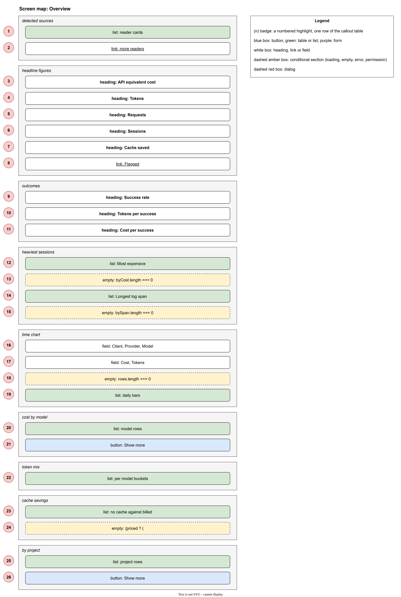

active approved inferred covers web/src/*, web/src/design-system/*
Overview Screen Map
This map shows the first view a reader lands on. It lets them see in one place what the slice cost, which readers found logs and where the spend went. Each numbered part says which figures it shows and when it shows nothing instead of a guess.
What the diagram shows
- The view stacks the detected readers panel, the headline figures, the outcome row, the heaviest sessions, the time chart and four panels in two grids
web/src/Overview.tsx:900-916. - The headline row has six figures, and the last one, Flagged, opens the Sources view when warnings exist
web/src/Overview.tsx:191-318web/src/Overview.tsx:321-329. - The time chart has two toggle groups, one for the stacking and one for the metric
web/src/Overview.tsx:552-576. - Each panel that may lack data draws an unavailable marker or an empty state rather than a zero
web/src/Overview.tsx:479-481web/src/Overview.tsx:579-584web/src/Overview.tsx:803-814.
Capability and related functionality
The view is selected from App Screen. The figures come from the report described in Web Data Model, and the rule that an absent figure is never drawn as zero is part of Web Specification. The Flagged figure leads to Sources Screen.
Overview Screen screen map

Code references
| Badge | Element | Code |
|---|---|---|
| 1 | <SourceCard reader cards |
web/src/Overview.tsx:117-117 |
| 2 | <button more readers |
web/src/Overview.tsx:151-153 |
| 3 | <Stat API equivalent cost |
web/src/Overview.tsx:193-193 |
| 4 | <Stat Tokens |
web/src/Overview.tsx:223-223 |
| 5 | <Stat Requests |
web/src/Overview.tsx:246-246 |
| 6 | <Stat Sessions |
web/src/Overview.tsx:265-265 |
| 7 | <Stat Cache saved |
web/src/Overview.tsx:284-284 |
| 8 | <Stat Flagged |
web/src/Overview.tsx:325-329 |
| 9 | <Stat Success rate |
web/src/Overview.tsx:362-362 |
| 10 | <Stat Tokens per success |
web/src/Overview.tsx:377-377 |
| 11 | <Stat Cost per success |
web/src/Overview.tsx:392-392 |
| 12 | <HeavyRow Most expensive |
web/src/Overview.tsx:472-472 |
| 13 | byCost.length === 0 empty section |
web/src/Overview.tsx:479-479 |
| 14 | <HeavyRow Longest log span |
web/src/Overview.tsx:492-492 |
| 15 | bySpan.length === 0 empty section |
web/src/Overview.tsx:499-499 |
| 16 | <ToggleGroup Client, Provider, Model |
web/src/Overview.tsx:554-559 |
| 17 | <ToggleGroup Cost, Tokens |
web/src/Overview.tsx:565-570 |
| 18 | rows.length === 0 empty section |
web/src/Overview.tsx:579-579 |
| 19 | <TimeChart daily bars |
web/src/Overview.tsx:585-585 |
| 20 | <MeterRow model rows |
web/src/Overview.tsx:667-667 |
| 21 | <button Show more |
web/src/Overview.tsx:708-711 |
| 22 | <BucketBar per model buckets |
web/src/Overview.tsx:751-751 |
| 23 | <ComparisonMeter no cache against billed |
web/src/Overview.tsx:790-790 |
| 24 | {priced ? ( empty section |
web/src/Overview.tsx:803-803 |
| 25 | <MeterRow project rows |
web/src/Overview.tsx:848-848 |
| 26 | <button Show more |
web/src/Overview.tsx:877-880 |